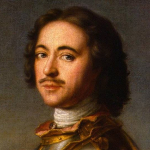
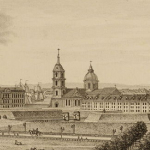
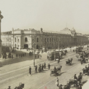
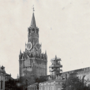
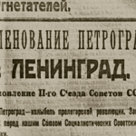
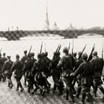

Путеводитель по Санкт-Петербургу
Рассказываем самое интересное
О городе
В этом путеводителе мы расскажем о самых интересных местах Санкт-Петербурга, которые обязательно стоит посетить при поездке в этот прекрасный город.
История
-
16 (27 по новому стилю) мая 1703 года Основание Санкт-Петербурга Петром I
 -
21 мая 1712 года Санкт-Петербург становится официальной столицей России
 -
1914 год Переименование в Петроград
 -
1918 год Перенос столицы из Петрограда в Москву
 -
26 января 1924 года Переименование Петрограда в Ленинград в честь В.И. Ленина
 -
8 сентября 1941 — 27 января 1944 гг Блокада Ленинграда, начатая войсками Финляндии и Германии
 -
8 мая 1965 года Присвоение городу Ленинграду звания Города-героя. Ленинград — город-герой
-
6 сентября 1991 года Возвращение городу прежнего названия Санкт-Петербург, о чём был подписан Указ Президиума Верховного Совета РСФСР
-
22 сентября 2012 года Рождение 5-ти миллионного жителя Санкт-Петербурга
Достопримечательности
Санкт-Петербург — город, который известен своими красивыми зданиями, музеями и парками. Это один из самых красивых городов России, который привлекает миллионы туристов каждый год. В этой статье мы расскажем о самых знаменитых достопримечательностях Санкт-Петербурга.
Бюджет поездки
Перед поездкой необходимо рассчитать приблизительный бюджет, который понадобится вам для путешествия.
-
Проживание
от 2000 ₽ -
Средний чек в ресторане
1300 ₽ -
Экскурсии
от 1000 ₽ -
Сувениры
от 300 ₽